Regression and PCA in finance typically ignore two sources of structure that practitioners know exist: the relationships between variables and the dependence along the time index. A cross-sectional regression of returns on characteristics treats each predictor as exchangeable; PCA of a yield panel treats each tenor as an unordered column. In reality, variables cluster into hierarchies—sector, asset class, maturity bucket—and observations are temporally ordered. I have used graph-based priors in both regression and PCA settings to encode this exogenous information, for example using hierarchical graphs to group related variables together so that coefficient or loading estimates borrow strength within economically meaningful clusters.
Econometric models take the opposite approach: VARs, state-space models, and panel regressions handle time-series and cross-sectional dependence natively, but they impose parametric structure on the dynamics—linearity, fixed lag order, homogeneous coefficients—that can be unrealistic when the data-generating process is nonstationary or high-dimensional.
Graph-regularized dimensionality reduction sits between these two traditions. The approach preserves the nonparametric flexibility of PCA while injecting structural priors through Laplacian penalties, and it can encode both feature relationships and temporal continuity simultaneously. I came across a paper on Graph-Regularized Generalized Low-Rank Models (Paradkar, Udell. (2017)) that formalises this idea within a unified GLRM framework—supporting arbitrary loss functions, missing data, and two-sided graph penalties. The generality of the framework is what attracted me: the same objective can express PCA with temporal smoothing, PCA with hierarchical feature grouping, or both at once, and it extends naturally to non-Gaussian losses.
I built vibe-coded the grpca package to implement this framework with two normalisation techniques—spectral Laplacian scaling and spectral data scaling used by Jiang et al.—that slightly deviates from Paradkar and Udell. These normalizations make the regularization hyperparameters dimensionless and portable across rolling windows with different sample sizes, variance levels, and graph topologies, which is essential for the kind of rolling out-of-sample evaluation used in this series.
The present post is the first in a planned series. I chose the JGB yield curve as the starting point because it is one of the first applications of PCA that people in finance learn about—a low-dimensional, well-understood setting where readers can build intuition before the framework is applied to harder problems. The yield curve is deliberately too easy for feature-side regularization: with only 11 tenors, PCA loadings are already smooth, and the interesting question is whether temporal regularization of the score matrix provides out-of-sample gains. Later posts will move to higher-dimensional settings where feature-side graph priors should matter more.
1 Theoretical underpinning
Let X\in\mathbb{R}^{n\times p} denote the data matrix, with rows indexed by observations and columns indexed by features. Missing entries are allowed and are encoded as np.nan. We write \Omega\subset\{1,\dots,n\}\times\{1,\dots,p\} for the observed-entry set and use P_\Omega(\cdot) for the projection that keeps observed entries and sets missing entries to zero. After standardization, the working matrix is Z.
Given this notation, we employ the following estimator that minimizes a masked two-sided graph-regularized low-rank objective:
The factor U contains observation embeddings, V contains feature loadings, \widetilde{L}_s is the observation-side graph Laplacian, and \widetilde{L}_f is the feature-side graph Laplacian. The ridge terms with \mu_u,\mu_v>0 improve coercivity and numerical conditioning.
Each graph entering the objective is assumed to be undirected and possibly weighted, with a symmetric positive-semidefinite Laplacian L = D - W where W is the weighted adjacency matrix and D is the degree matrix. No specific topology is assumed: the framework accommodates chains, trees, complete graphs, k-nearest-neighbour graphs, or any other undirected weighted graph. The only mathematical requirements are symmetry (W = W^\top), positive semidefiniteness (L \succeq 0, guaranteed by construction for any combinatorial Laplacian), and separability (the observation graph L_s \in \mathbb{R}^{n \times n} and the feature graph L_f \in \mathbb{R}^{p \times p} are specified independently). The Laplacian quadratic form \operatorname{tr}(U^\top L_s\, U) penalises disagreement between connected observations in the latent space, and \operatorname{tr}(V^\top L_f\, V) penalises disagreement between connected features. The strength of the penalty between any pair (i,j) is proportional to the edge weight w_{ij}; pairs with no edge contribute nothing.
Paradkar & Udell (2017) use raw combinatorial Laplacians L = D - W and unscaled data terms. When the same model is applied across multiple data windows of different sizes, this creates a practical problem: the magnitude of the graph penalty grows with \lambda_{\max}(L), which depends on graph size and edge weights, while the magnitude of the data-fidelity term scales with the variance and dimension of the data matrix. A fixed \lambda that provides moderate regularization in one setting can be negligible or overwhelming in another. Our implementation introduces two normalizations that make the hyperparameters dimensionless and portable. First, every graph Laplacian entering the objective is divided by its largest eigenvalue: \widetilde{L} = L / \lambda_{\max}(L), so that \lambda_{\max}(\widetilde{L}) = 1. (The spectral normalization is distinct from the symmetric normalized Laplacian D^{-1/2}LD^{-1/2}; our normalization applies to whatever Laplacian the user supplies, including already degree-normalized ones.) With this convention, the quadratic form \operatorname{tr}(V^\top \widetilde{L} V) lies in [0, \|V\|_F^2] for any graph, so the regularization strength has a graph-independent upper bound on its effect. Second, the reconstruction term is divided by s_X = \sigma_1^2(Z_{\text{fill}}), the squared leading singular value of the zero-filled standardized data matrix, scaling the data-fidelity term to order one regardless of sample size or variance level. Together, these normalizations mean that a given \tau value represents roughly the same bias-variance trade-off regardless of sample size, data variance, or graph topology. The combined normalization allows a single hyperparameter grid to be used across multiple estimation windows without per-window rescaling.
The factorization UV^\top is not unique however: for any orthogonal R\in\mathbb{R}^{k\times k}, the rotated pair (UR,VR) produces the same product. Individual columns of V are therefore not uniquely identified as fixed population eigenvectors, and raw column-wise comparisons across estimation windows can be misleading. Meaningful comparison operates at the subspace level or after Procrustes alignment. Ridge penalties on both U and V improve numerical conditioning but do not resolve this rotational ambiguity. To simplify the hyperparameter search space, we parameterize regularization by total strength \tau\ge 0 and allocation \rho\in[0,1]:
\lambda_s=\tau\rho,\qquad \lambda_f=\tau(1-\rho).
The reparametrization separates overall shrinkage intensity from how shrinkage is split between observation-side smoothness (U) and feature-side smoothness (V). Since both Laplacians and data are normalized, \tau is dimensionless, comparable across windows, and more interpretable than tuning raw penalty magnitudes independently.
Paradkar & Udell (2017) solve Graph-Regularized GLRMs with PALM (Proximal Alternating Linearized Minimization), a framework designed for general (possibly non-smooth) loss functions such as Huber, hinge, or ordinal losses. Each PALM iteration linearizes the smooth data-fidelity term around the current iterate and applies a loss-specific proximal operator, with convergence guaranteed under a Lipschitz step-size rule. In our formulation, restricting to squared-error loss makes the objective everywhere differentiable in (U,V), and the proximal operator reduces to the identity. The full PALM machinery is therefore unnecessary. Our implementation (grpca) replaces it with alternating gradient descent with monotone backtracking line search: each outer iteration computes the closed-form gradient
takes a gradient step U \leftarrow U - \eta\,\nabla_U (then V \leftarrow V - \eta\,\nabla_V), and halves the step size \eta until the objective decreases monotonically. Convergence to a stationary point follows from the standard descent-lemma argument for smooth bi-convex problems. Unlike Paradkar & Udell’s general framework, which optionally includes \ell_1 sparsity on U or V, we use dense (unpenalized) factors throughout—appropriate for settings where all features contribute to each latent factor. We initialize factors with a truncated SVD of the zero-filled matrix, providing a good starting point that typically converges in tens of iterations.
2 JGB experiment setup
The data are Japanese Ministry of Finance constant-maturity JGB yields. We work with a stable subset of tenors (in years) and compute daily yield changes. We standardize each rolling window using train-window statistics only; the train mean and standard deviation are applied to the test window with no leakage.
We instantiate the framework with two chain graphs that encode the known structure of yield-curve data. The tenor-chain (feature graph) connects adjacent maturities with edge weights inversely proportional to the squared maturity gap:
where m_i is the maturity in years of the i-th tenor. The weighting gives tighter coupling between closely spaced tenors (e.g., 1Y–2Y) and weaker coupling between widely spaced ones (e.g., 20Y–30Y). The Laplacian quadratic form admits the pairwise-difference identity
which penalizes high-frequency oscillation in the loading vectors: neighboring tenors are encouraged to have similar loading coordinates. The day-chain (observation graph) connects consecutive trading dates with unit weight. The day-chain is rebuilt on each training window so that its dimension matches the number of training observations. The analogous quadratic form
penalizes abrupt jumps in the latent score trajectories between adjacent dates, encoding temporal continuity of the factor structure.
We compare four specifications, all with k = 3 latent components:
Model
Observation graph
Feature graph
CV search
PCA
—
—
\tau = 0 (no CV)
Day
day-chain
—
\tau with \rho = 1
Tenor
—
tenor-chain
\tau with \rho = 0
Day+Tenor
day-chain
tenor-chain
\tau and \rho \in \{0.25, 0.5, 0.75\}
Nested time-series cross-validation selects (\tau, \rho) window by window. Before stating the empirical objective, we examine the data and graph structure below
pre_1999_mean
pre_1999_vol_ann
1999_2007_mean
1999_2007_vol_ann
post_2007_mean
post_2007_vol_ann
tenor
1Y
-0.0024
0.6605
0.0003
0.1343
0.0001
0.1403
2Y
-0.0018
0.6069
0.0002
0.2120
0.0001
0.1866
3Y
-0.0013
0.6059
0.0002
0.3019
0.0001
0.2201
5Y
-0.0011
0.6281
-0.0000
0.4164
0.0001
0.2930
7Y
-0.0010
0.7101
-0.0001
0.5068
0.0001
0.3743
8Y
-0.0010
0.7239
-0.0002
0.4949
0.0001
0.3656
9Y
-0.0010
0.6855
-0.0001
0.4753
0.0001
0.3465
10Y
-0.0010
0.7945
-0.0001
0.4685
0.0001
0.3264
15Y
-0.0021
0.6267
-0.0002
0.4813
0.0002
0.3479
20Y
-0.0010
0.5911
-0.0003
0.4594
0.0002
0.3570
30Y
nan
nan
-0.0002
0.4538
0.0003
0.3827
40Y
nan
nan
nan
nan
0.0003
0.3884
(a) Cross-tenor average daily yield change over the sample period
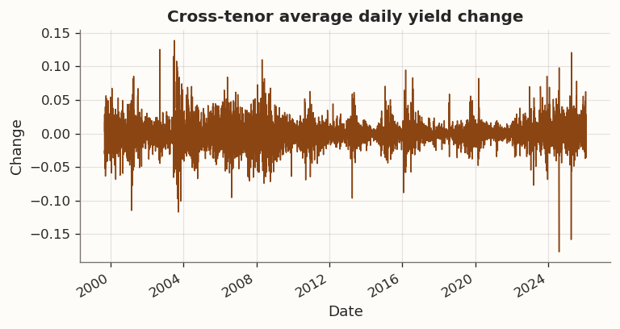
(b)
Figure 1
Figure 1 shows several volatility regimes that line up with major Bank of Japan policy transitions. The introduction of Quantitative and Qualitative Easing (QQE) in April 2013 was followed by a sharp rise in JGB market volatility, including episodes of disorderly price action and circuit-breaker halts in JGB futures. The introduction of Yield Curve Control (YCC) in September 2016 shifted the policy framework to target the 10-year yield around 0%, materially compressing realized volatility for extended periods. The subsequent adjustments beginning in December 2022, when the BOJ widened the tolerated band to ±50 bp, and culminating in March 2024 when it ended negative rates and exited YCC, coincide with a renewed rise in yield volatility in our sample. 
Two features matter for our graph-regularization setup. Regime heterogeneity motivates per-window standardization and shorter rolling windows that adapt to local conditions. The low-frequency structure visible in daily yield changes—slow regime evolution punctuated by discrete policy-driven shifts—also motivates the day-chain smoothness prior as a conservative inductive bias. If a meaningful portion of variation in the latent scores is low-frequency, penalizing day-to-day score jumps targets high-frequency variation first. The day-chain itself is a unit-weighted path graph on the n consecutive training dates and serves only to encode the ordering of observations.
Figure 2 displays our tenor-chain adjacency matrix W that enters the feature-side Laplacian L_f = D - W. The inverse-squared-gap weighting produces a tight cluster at 7Y–8Y–9Y (gap = 1 year, weight = 1.0) and much weaker coupling between distant tenors such as 20Y–30Y (gap = 10 years, weight = 0.01). The penalty therefore concentrates its effect on tenors that already co-move almost perfectly—precisely the region where PCA loadings are smoothest and least in need of regularisation. Whether this graph topology provides any variance reduction, or merely adds bias by smoothing through genuine structural breaks, is assessed empirically below.
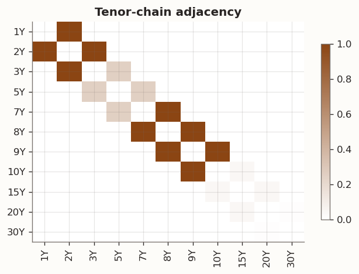
Figure 2: Adjacency matrix for the tenor-chain feature graph
3 Empirical objective
The empirical study in this note is not meant to validate graph regularization in the abstract. The goal is to assess what changes when graph-structured shrinkage is added to a low-rank model, and to identify which regularization terms are active under time-series cross-validation. The model differs from an unregularized low-rank fit only through two quadratic penalties. The day-chain term \operatorname{tr}(U^\top L_s U) penalizes temporal roughness of the score trajectories, while the tenor-chain term \operatorname{tr}(V^\top L_f V) penalizes roughness of loadings across maturities. These graphs are kept intentionally simple. This structure suggests a natural evaluation order. The first step is to verify whether the corresponding roughness functional declines relative to the unregularized fit. The second step is to evaluate whether any induced smoothness improves out-of-sample reconstruction on held-out blocks. The final step is to examine how the estimated factor geometry evolves across windows under stability metrics that remain meaningful for GLRM.
Two competing mechanisms frame interpretation without presuming improvement. Variance-directed shrinkage is relevant when short rolling windows and weak identification allow a low-rank fit to allocate degrees of freedom to high-frequency patterns. Under this mechanism, day-side shrinkage should primarily appear as a reduction in score roughness \operatorname{tr}(U^\top L_s U), while tenor-side shrinkage should primarily appear as a reduction in loading roughness \operatorname{tr}(V^\top L_f V). Bias dominance becomes relevant when the baseline solution is already smooth relative to the imposed graph geometry. Under that mechanism, additional shrinkage has little variance to remove and mainly distorts the optimum; cross-validation should then select \tau=0, and the regularized model should collapse back to the unregularized fit. The empirical study is designed to distinguish between these mechanisms for each graph in the JGB setting.
We evaluate the objective with diagnostics directly tied to the objective terms and valid under GLRM identifiability. Roughness is tracked through \operatorname{tr}(U^\top L_s U) and \operatorname{tr}(V^\top L_f V). Window-to-window changes in factor geometry are summarized by two complementary stability metrics: subspace distance\sin\theta_{\max}, defined as the sine of the largest principal angle between consecutive loading subspaces computed after orthonormalization, and Procrustes drift\min_R\|V_t - V_{t-1}R\|_F, defined as the Frobenius residual after optimal orthogonal alignment in latent space. Out-of-sample reconstruction error on held-out test blocks anchors the comparison, so any gain in smoothness is judged against generalization cost. The study proceeds from full-sample fits to rolling evaluation at multiple window lengths, allowing the same objective to be assessed both in aggregate and under short-sample estimation stress.
3.1 Hyperparameter selection and cross-validation procedure
Cross-validation respects time ordering and is nested inside each training window. Each outer window is split into a training block and a subsequent held-out test block used only for out-of-sample evaluation. Hyperparameters are chosen within the training block using a contiguous validation holdout formed from the final segment of the training window; the earlier portion serves as inner training. Standardization is fit on the inner training segment using observed entries only and then applied unchanged to the validation segment and to the outer test block. The day-chain graph is constructed from dates in the segment on which the model is fit during selection, and the validation and test blocks are never coupled into the training graph.
Selection is conservative and stability enters only as a tie-breaker. The primary criterion is the validation reconstruction loss. A candidate set is formed from hyperparameters whose validation loss lies within a (1+\delta) tolerance of the minimum. The default choice is the smallest \tau in this candidate set, reflecting a preference for weaker regularization when validation performance is statistically indistinguishable. Stability is invoked only when multiple candidates share the same \tau under this rule or when the candidate set remains large due to a flat validation surface. In that case, the candidate whose loading subspace is closest to the previous window is selected, using a GLRM-valid measure of loading similarity. The tie-break is therefore a deterministic rule for choosing among near-equivalent validation optima in a way that reduces unnecessary window-to-window churn.
This same cross-validation procedure is used in the full-sample study below and in every rolling window thereafter.
4 Full-sample study
Four specifications are fit on the full sample with k=3: an unregularized baseline (PCA), Day (day-chain only), Tenor (tenor-chain only), and Day+Tenor. Hyperparameters are selected using the nested time-series cross-validation procedure described above. The factorization UV^\top is invariant under orthogonal rotation in latent space, so loading vectors are compared only after orthogonal Procrustes alignment to a common baseline. The figures therefore report aligned loading profiles rather than raw column vectors.
Cross-validation outcomes and the two roughness diagnostics provide the first indication of which regularization terms are active in this dataset. The aligned loading and score figures are interpreted through that lens. Temporal smoothing is assessed through changes in \operatorname{tr}(U^\top L_s U) and through the resulting score paths, while maturity smoothing is assessed through \operatorname{tr}(V^\top L_f V) and through the aligned loading geometry.
day_graph
tenor_graph
tau
rho
lambda_s
lambda_f
recon_error
loading_roughness
score_roughness
model
PCA
False
False
0.0000
0.0000
0.0000
0.0000
0.9874
0.0011
5908694.7152
Day
True
False
0.0100
1.0000
0.0100
0.0000
0.9728
0.0024
125820.9565
Tenor
False
True
0.0000
0.0000
0.0000
0.0000
0.9874
0.0011
5908694.7152
Day+Tenor
True
True
0.0300
0.5000
0.0150
0.0150
0.9734
0.0023
66555.2307
(a) Full-sample Procrustes-aligned loading comparison (k=3) across PCA, Day, Tenor, and Day+Tenor GLRM models with cross-validated hyperparameters
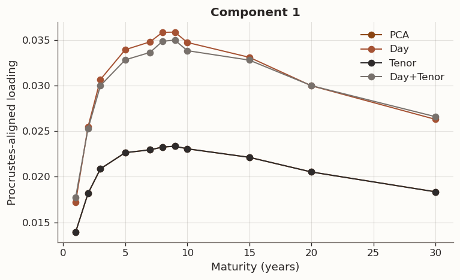
(b)
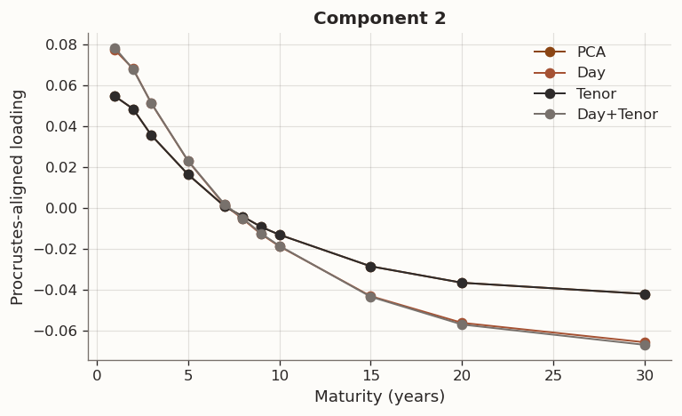
(c)
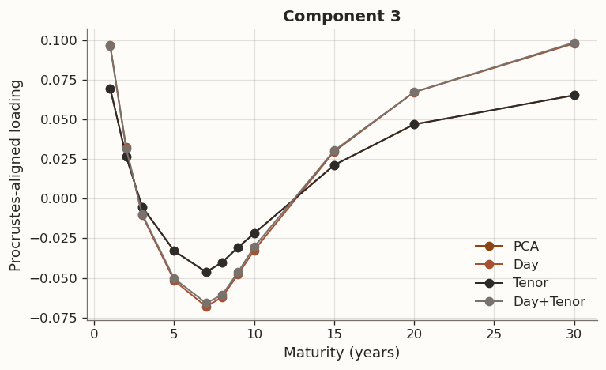
(d)
Figure 3
In GLRM the factorisation UV^\top is invariant under orthogonal rotation, so individual columns of V are not uniquely identified. The loading comparison above first aligns each model to the PCA baseline via orthogonal Procrustes, which finds the rotation R^\star=\arg\min_R\|V_{\text{PCA}}-V_{\text{model}}R\|_F subject to R^\top R=I. Differences that remain after alignment reflect genuine changes in the factor geometry, not relabelling or sign ambiguity.
The Procrustes-aligned loading profiles are consistent with the standard yield-curve factors. Component 1 is a level factor: positive loadings across all tenors with a broad plateau at intermediate maturities, corresponding to parallel shifts driven by the common component of rate expectations. Component 2 is a slope factor: monotonically decreasing from positive at the short end to negative at the long end, capturing the steepening and flattening moves associated with BOJ accommodation cycles and term-premium variation. Component 3 is a curvature (butterfly) factor: a hump-shaped profile peaking around 5Y–7Y, reflecting the belly-vs.-wings dynamics that arise from supply concentration in benchmark tenors and relative-value positioning. Together the three components explain the vast majority of daily yield-change variation, consistent with decades of term-structure research on both U.S. Treasuries and JGBs.
The results table reveals that cross-validation selects \tau=0 for the Tenor model, collapsing it to PCA. The tenor-chain smoothness prior brings no improvement to the full-sample validation loss, so the conservative selection rule defaults to zero regularisation. By contrast, the Day model selects \tau=0.01 and the Day+Tenor model selects \tau=0.03 (\rho=0.5), and both achieve lower in-sample reconstruction error than PCA. Day-graph regularisation sharply reduces score roughness \operatorname{tr}(U^\top L_s U), confirming that the temporal-smoothness penalty reaches its intended target. The rolling study below will examine whether these in-sample improvements generalize out of sample.
Table 1: Explained variance by PCA component (full sample)
Variance explained (%)
Cumulative (%)
Component
1
83.39
83.39
2
10.53
93.92
3
3.08
97.00
4
0.98
97.98
5
0.62
98.60
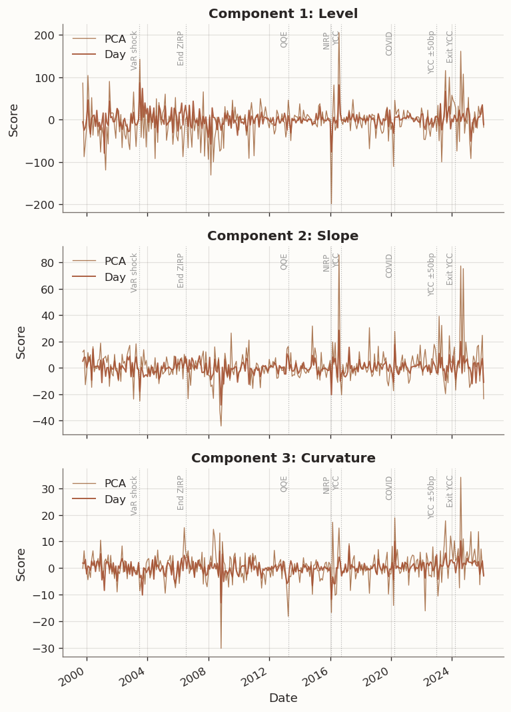
Figure 4: Full-sample factor scores (monthly last, level/slope/curvature) for PCA vs Day-regularised model with BOJ policy events
The PCA level score (Component 1) displays rapid oscillations that are tuned down in the Day-regularised counterpart, which tracks a smoother path through the same macro regimes—the 2003 VaR shock sell-off, the 2008 GFC flight-to-quality, the 2013 QQE-induced volatility, and the 2022–2024 YCC exit. The smoothing is most dramatic in the curvature score (Component 3), where PCA produces chaotic high-frequency noise while the Day model isolates a slowly evolving butterfly signal.
5 Rolling study: one-year training windows
We first fit the model on a rolling-window basis, applying the same nested cross-validation procedure within each training window. The summary tables below report, for each method: the mean, median, and 90th-percentile OOS reconstruction loss; the fraction of windows where the method strictly outperforms PCA (win_rate_vs_PCA); and a Diebold–Mariano test statistic (DM_stat) with Newey–West HAC-corrected p-value (DM_p) that accounts for the serial dependence induced by overlapping test windows.
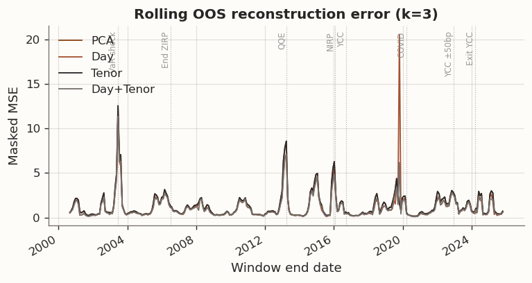
(a) Rolling out-of-sample reconstruction error (k=3) for PCA, Day, Tenor, and Day+Tenor
mean
median
p90
win_rate_vs_PCA
DM_stat
DM_p
method
Day
1.1476
0.6179
2.2803
0.9967
-2.2507
0.0122
Day+Tenor
1.1009
0.6192
2.2511
0.9967
-8.0592
0.0000
PCA
1.2930
0.7404
2.6745
nan
nan
nan
Tenor
1.2930
0.7404
2.6745
0.0000
nan
nan
(b)
Figure 5
The rolling results help differentiate the specifications. Day and Day+Tenor reduce out-of-sample reconstruction error relative to the unregularized baseline in a large fraction of windows, with the magnitude of the improvement varying over time. Tenor becomes numerically indistinguishable from the baseline whenever cross-validation selects \tau=0, indicating that the maturity-smoothing channel is not activated under this tuning criterion in the present low-dimensional panel.
The remainder of the rolling analysis focuses on three questions: whether day-side shrinkage measurably reduces score roughness, whether that reduction coincides with improved out-of-sample reconstruction, and how the estimated loading geometry evolves across windows under GLRM-valid stability metrics. The Diebold–Mariano tests summarize whether the time series of window-level loss differentials is centered at zero under a HAC correction appropriate for overlapping test blocks.
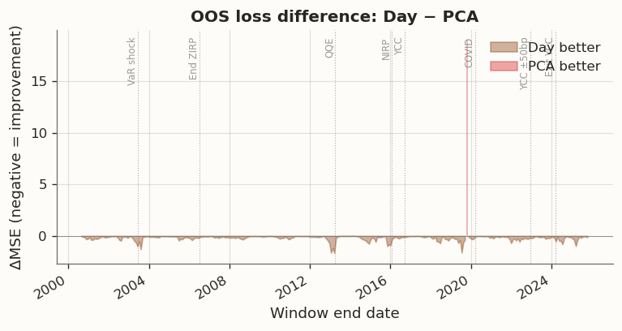
Figure 6: OOS improvement of Day model over PCA (negative = Day better) with BOJ policy events
Out-of-sample differences are not uniform across the sample. The rolling plots show larger gaps between the day-regularized specifications and the baseline in windows spanning major volatility transitions.
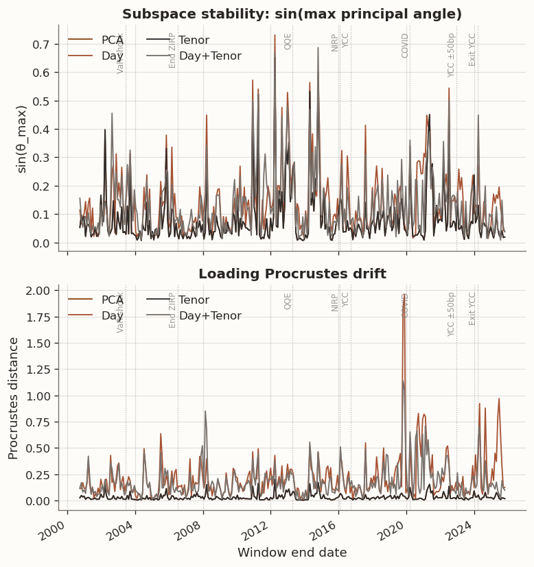
(a) Rolling subspace and Procrustes loading stability (k=3)
subspace_sinmax_mean
subspace_sinmax_median
procrustes_drift_mean
procrustes_drift_median
win_sub_vs_PCA
win_proc_vs_PCA
method
Day
0.1418
0.1120
0.2147
0.1560
0.1405
0.0000
Day+Tenor
0.1331
0.1020
0.1804
0.1366
0.1830
0.0033
PCA
0.0818
0.0496
0.0303
0.0205
nan
nan
Tenor
0.0818
0.0496
0.0303
0.0205
0.0000
0.0000
(b)
Figure 7
The stability diagnostics show that reconstruction improvements and loading stability need not move in the same direction. Procrustes drift and subspace distance can increase in windows where cross-validation selects stronger day regularization. However, temporal smoothing of score trajectories does not automatically translate into a more stable loading geometry under rolling re-estimation, and stability depends on whether attention is placed on the rank-k subspace or on an aligned basis within that subspace.
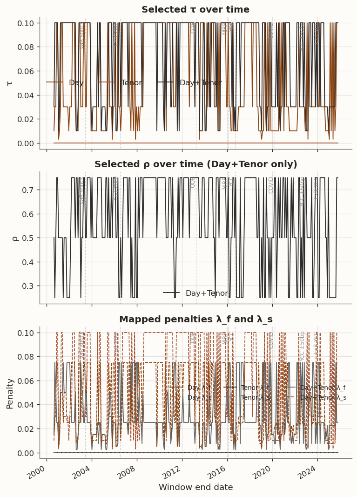
Figure 8: Cross-validated hyperparameters over time for the three GLRM models
Looking at the hyperparameter paths, the Tenor model selects \tau=0 in every window, meaning cross-validation never finds the tenor-chain penalty beneficial—the regularised model collapses to PCA across the entire sample. Day selects moderate to strong \tau values (mean 0.056, never zero), indicating persistent benefit from temporal smoothing. Day+Tenor also selects non-zero \tau in every window, with \rho values reflecting the data-driven balance between temporal and maturity smoothness.
The Day \tau path is a bit noisy so we should not over-read into the window-by-window point estimates. The roughness diagnostics below provide a cleaner lens on the same economic mechanism.
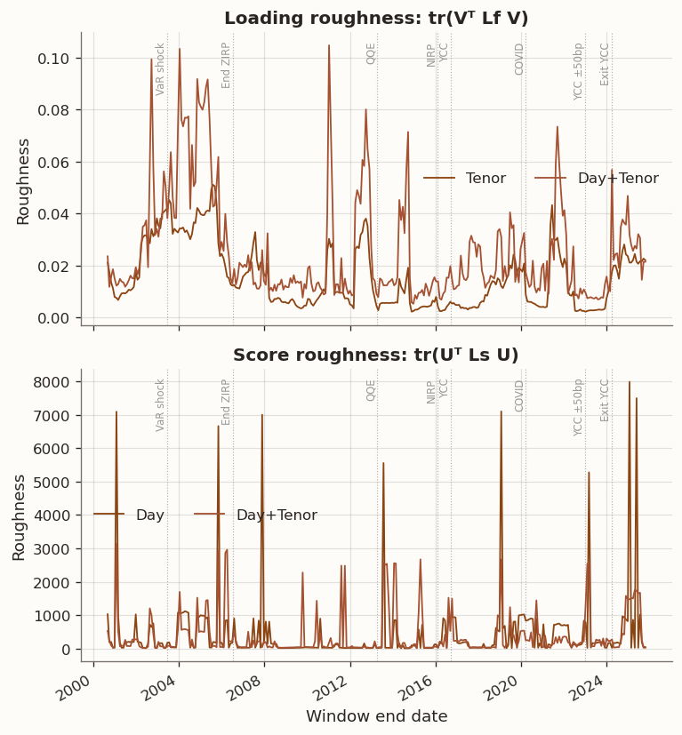
(a) Loading and score roughness over time for models with the corresponding graph
loading_roughness_mean
loading_roughness_median
score_roughness_mean
score_roughness_median
method
Day
nan
nan
441.4170
123.9683
Day+Tenor
0.0259
0.0157
385.7558
81.3492
PCA
nan
nan
nan
nan
Tenor
0.0154
0.0108
nan
nan
(b)
Figure 9
Day-graph regularisation cuts score roughness \operatorname{tr}(U^\top L_s U), confirming the temporal-smoothness penalty reaches its intended target. The Tenor model, which always selects \tau=0, produces roughness identical to PCA. The day-side score-roughness improvement translates directly to OOS accuracy gains, as confirmed by the near-100% window-level win rates and significant DM statistics above.
Score roughness is only defined for models with a day graph, so only Day and Day+Tenor appear in the lower panel. Both lines spike around the 2013 QQE launch and the 2022 YCC band widening, and both collapse to near-zero during the sustained low-volatility YCC era (2017–2019). Day+Tenor tracks modestly below Day throughout (mean 386 vs 441), suggesting the additional tenor-graph penalty provides a small further reduction in temporal roughness. The event-driven spike pattern is consistent with the view that score roughness is driven by policy-regime volatility: temporal smoothing has the most work to do when abrupt policy shifts inject high-frequency noise into score trajectories.
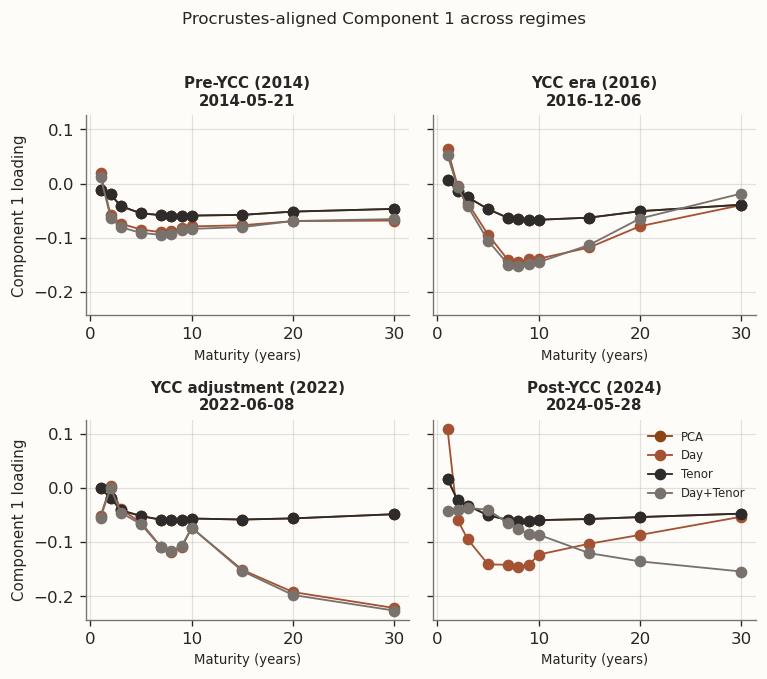
(a) Procrustes-aligned loadings at representative windows from different market regimes
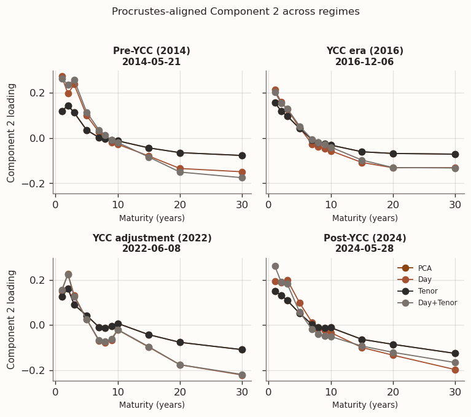
(b)
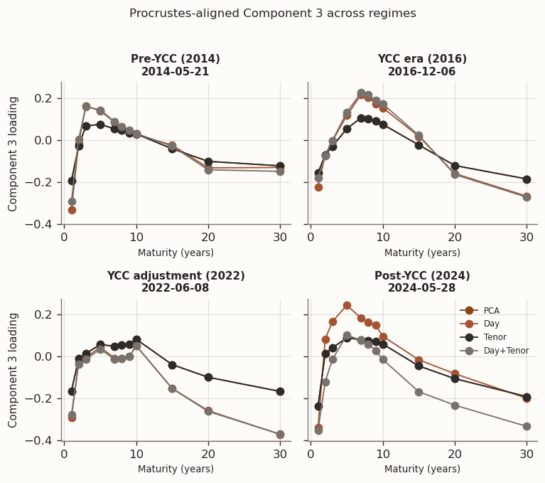
(c)
Figure 10
The regime snapshots show that PCA and Tenor produce nearly identical loading shapes—consistent with Tenor selecting \tau=0 in every window, so the two models converge to the same solution up to numerical tolerance. Day and Day+Tenor form a second group whose loading profiles differ from PCA, though the mechanism differs: Day has no tenor graph, so its loadings change only indirectly through the day-chain penalty on scores, whereas Day+Tenor smooths loadings directly via the tenor graph. The grouping is clearest in Component 3, where the signal-to-noise ratio is lowest and the regularisation prior has the most room to reshape the solution. Across all three components, differences across regimes remain larger than differences across models within a regime, reflecting the nonstationarity of the JGB curve.
Taken together, the one-year rolling results are consistent with the two competing mechanisms outlined in the empirical objective. The day-chain penalty targets the high-variance score matrix, reduces its roughness, and is associated with lower OOS reconstruction error. The regime snapshots confirm that loading-shape differentiation between regularised and unregularised models is most visible in Component 3, where the eigengap is smallest and the prior has the most leverage. The tenor-chain penalty finds little to smooth in the already-regular loading matrix and adds only bias, so cross-validation zeroes it out in every window. Two open questions remain: do these patterns intensify when training data is scarce enough that PCA overfits, and does the clean PCA/Tenor vs. Day/Day+Tenor grouping survive under noisier estimation?
6 Rolling study: three-month training windows
To address both questions, we repeat the rolling evaluation with three-month training windows (~63 business days), one-month test windows, and one-month steps. With n/p \approx 6, the sample covariance matrix is poorly conditioned and higher-order eigenvectors are noisy. Within each training window, nested time-series cross-validation uses the first two months for inner training and the last month for validation.
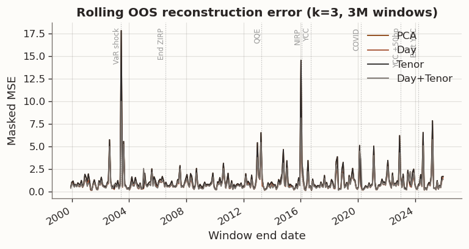
(a) Rolling out-of-sample reconstruction error (k=3, 3M training windows)
mean
median
p90
win_rate_vs_PCA
DM_stat
DM_p
method
Day
0.9080
0.6460
1.5906
0.9968
-8.5778
0.0000
Day+Tenor
0.9165
0.6023
1.6121
0.9842
-7.5292
0.0000
PCA
1.1960
0.8102
1.9875
nan
nan
nan
Tenor
1.1960
0.8102
1.9875
0.0000
1.0016
0.8417
(b)
Figure 11
Shortening the training window increases estimation noise and raises the value of inductive bias. Under three-month windows, day-regularized specifications continue to reduce score roughness and modestly improve out-of-sample reconstruction relative to the baseline, though the per-window gains are small and the OOS loss curves are nearly indistinguishable in the time-series plot. Tenor-only regularization remains inactive whenever cross-validation selects \tau=0, leaving it indistinguishable from the baseline. Stability diagnostics are reported alongside reconstruction to make the tradeoff explicit, since short windows can also increase variability in the estimated loading geometry.
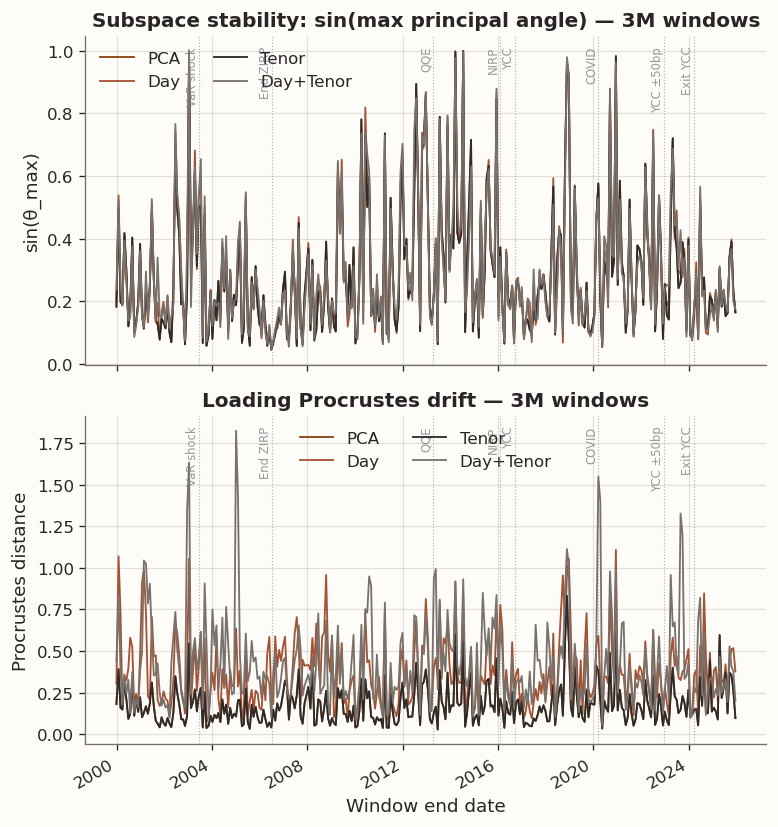
(a) Rolling subspace and Procrustes loading stability (k=3, 3M training windows)
subspace_sinmax_mean
subspace_sinmax_median
procrustes_drift_mean
procrustes_drift_median
win_sub_vs_PCA
win_proc_vs_PCA
method
Day
0.2921
0.2307
0.3743
0.3467
0.4146
0.0032
Day+Tenor
0.2945
0.2359
0.4288
0.3543
0.4589
0.0285
PCA
0.2860
0.2297
0.1749
0.1459
nan
nan
Tenor
0.2860
0.2297
0.1749
0.1459
0.0032
0.0032
(b)
Figure 12
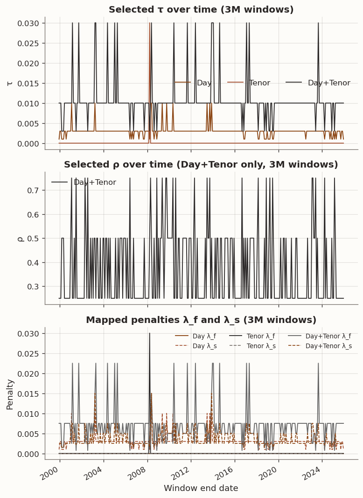
Figure 13: Cross-validated hyperparameters over time (3M training windows)
Fraction of windows selecting τ=0 (3M):
PCA: 100.0%
Day: 0.0%
Tenor: 99.7%
Day+Tenor: 0.0%
Mean τ by method (3M):
mean median
method
Day 0.003000 0.003
Day+Tenor 0.010606 0.010
PCA 0.000000 0.000
Tenor 0.000095 0.000
All four models exhibit markedly higher subspace instability with 3M windows compared to 1Y, with mean \sin(\theta_{\max}) rising to ≈0.29 across all methods (vs. ≈0.08–0.14 with 1Y windows). The Procrustes-drift ranking mirrors 1Y but with wider gaps: PCA/Tenor remain the most stable (mean drift 0.17) while Day (0.37) and Day+Tenor (0.43) drift 2–2.5× more.
Tenor cross-validation again selects \tau\approx 0 in virtually every window. Day selects smaller \tau values (mean 0.003 vs. 0.056 in 1Y). Day+Tenor selects mean \tau = 0.011 with \rho varying across the full 0.25–0.75 grid.
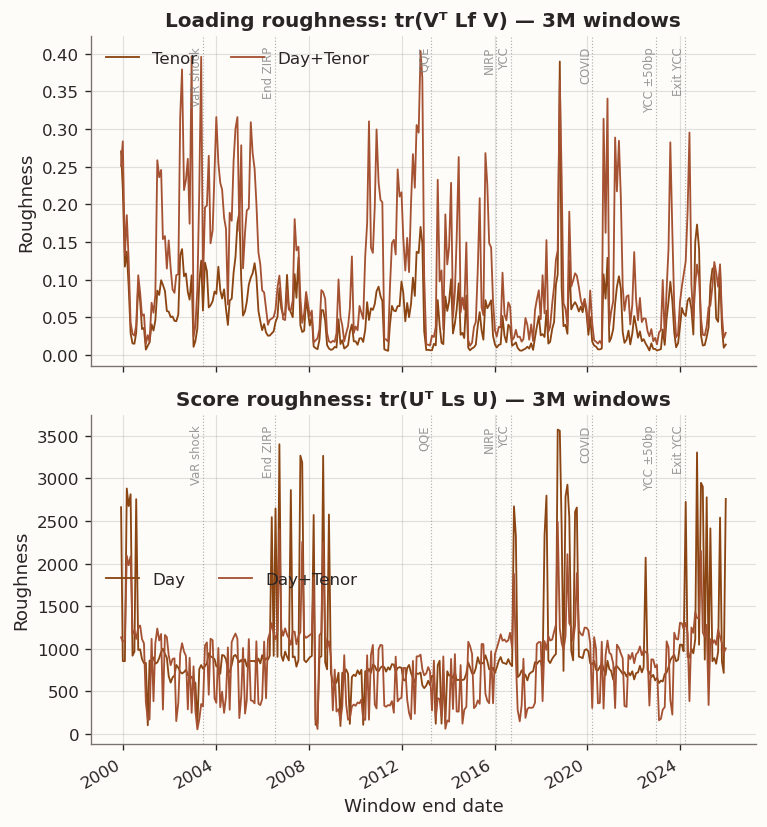
(a) Loading and score roughness over time (3M training windows)
loading_roughness_mean
loading_roughness_median
score_roughness_mean
score_roughness_median
method
Day
nan
nan
992.5572
811.1620
Day+Tenor
0.1118
0.0835
823.6332
936.4316
PCA
nan
nan
nan
nan
Tenor
0.0538
0.0448
nan
nan
(b)
Figure 14
Loading roughness remains low for Tenor (mean \operatorname{tr}(V^\top L_f V) = 0.054) because the model collapses to PCA, which naturally produces smooth loadings with only 11 tenors. Day+Tenor loading roughness is approximately double (0.112), reflecting the interaction between the two penalty channels: the optimisation trades some loading smoothness for score smoothness. Score roughness \operatorname{tr}(U^\top L_s U) is roughly 2\times higher than in 1Y windows for both Day (mean 993 vs. 441) and Day+Tenor (mean 824 vs. 386). Day+Tenor has a lower mean score roughness, but a higher median (936 vs. 811), indicating the advantage is concentrated in a subset of windows rather than reflecting a systematic improvement.
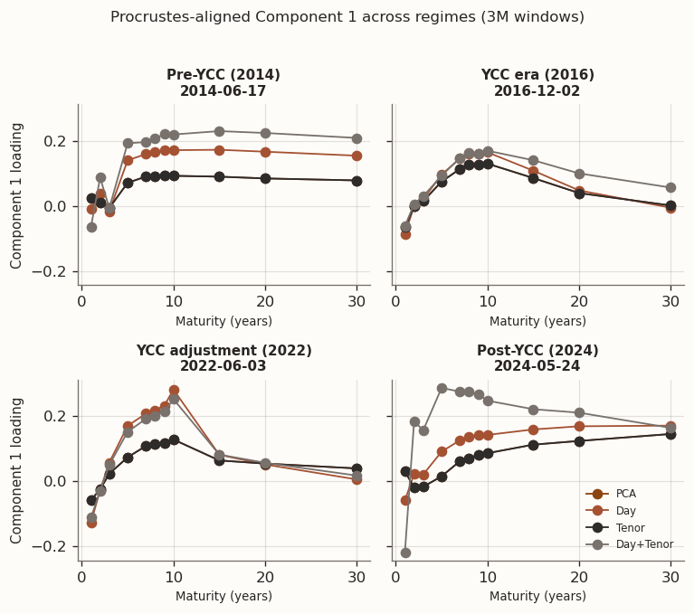
(a) Procrustes-aligned loadings at representative windows (3M training windows)
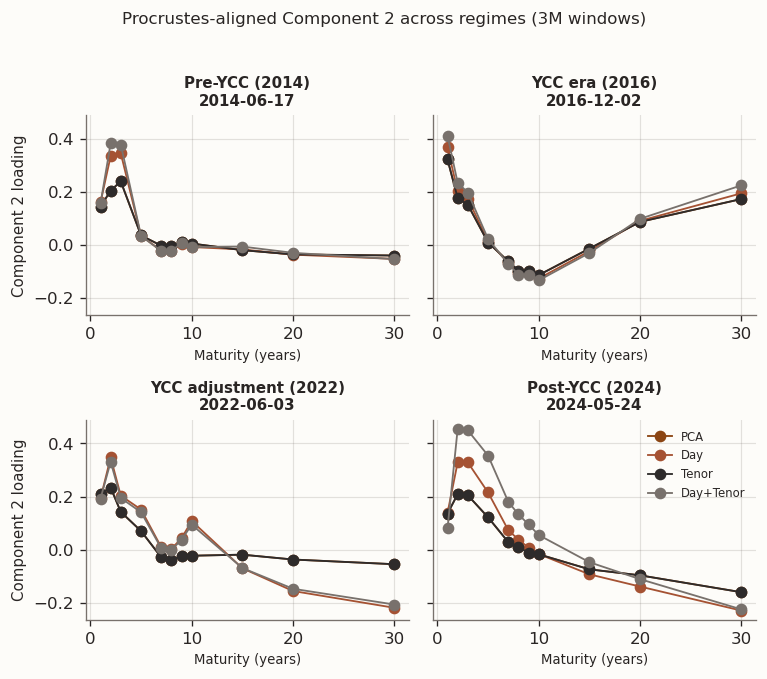
(b)
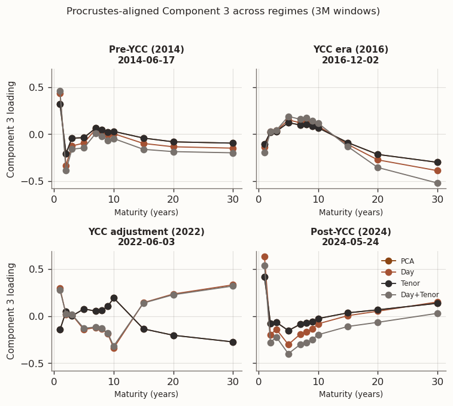
(c)
Figure 15
The Procrustes-aligned regime snapshots with 3M windows show noticeably wider inter-model spread than with 1Y, consistent with the greater subspace instability identified above. PCA and Tenor remain close but no longer perfectly overlap—the slightly non-zero \tau in a handful of windows, combined with higher estimation noise, introduces visible differences in some panels. The Day/Day+Tenor grouping that was clear with 1Y windows is weaker here: the two models diverge from each other almost as much as from PCA in several Component 1 and Component 3 panels. Component 3 shows the largest overall model spread, as expected from its smallest eigengap, but the separation is between all four models rather than two clean pairs.
7 Discussion
The empirical results highlight the difference between temporal and maturity graph regularization in this JGB curve setting. Day-graph regularization is repeatedly selected by cross-validation and is associated with lower out-of-sample reconstruction error in a large fraction of rolling windows. Tenor-graph regularization is frequently set to \tau=0 by cross-validation and consequently collapses to the unregularized baseline, suggesting limited incremental value from maturity-smoothing under this tuning criterion for the current panel.
Model choice depends on the target criterion. Out-of-sample reconstruction and imputation under short rolling windows favor day-side smoothing in this sample. Factor stability and interpretability require explicit attention to the stability metrics, since improvements in reconstruction do not automatically imply reduced Procrustes drift or smaller principal-angle changes across windows.
Estimation noise is concentrated in U, not V. In unregularised PCA, the loading matrix V \in \mathbb{R}^{p \times k} is estimated from the full n \times p training matrix and benefits from averaging across all n dates. The score at date t, \hat{u}_t = V^\top z_t, is a point estimate from a single p-dimensional observation. It carries the full noise of that one cross-section with no temporal averaging. With p = 11, each score estimate has very few effective degrees of freedom. Empirical score roughness \operatorname{tr}(U^\top \widetilde{L}_s U) averages roughly 440 in one-year windows and 990 in three-month windows—large day-to-day jumps—while loading roughness \operatorname{tr}(V^\top \widetilde{L}_f V) is approximately 0.015–0.054 across settings, placing PCA loadings near the null space of the tenor-chain Laplacian. The two penalties therefore face fundamentally different variance-reduction opportunities.
The Day-chain penalty reduces MSE. The day-chain penalty \operatorname{tr}(U^\top \widetilde{L}_s U) = \tfrac{1}{2}\sum_{t=1}^{n-1}\|u_t - u_{t+1}\|_2^2 is a first-difference roughness penalty on each score trajectory. Writing the regularised score estimate as an approximate local average,
the variance of \tilde{u}_t decreases by a factor proportional to the effective smoothing bandwidth, at a bias cost proportional to the local curvature \|u_{t+1} - 2u_t + u_{t-1}\|. This trade-off favours smoothing whenever the true score trajectory is smoother than white noise. JGB factor scores—driven by BOJ policy rates, term premia, and inflation expectations—evolve on weekly-to-monthly time scales, as the low-frequency regime structure in Figure 1 suggests. Day-to-day changes are small relative to estimation noise, so the smoothness prior is well-calibrated to the true data-generating process. Spectrally, the day-chain Laplacian \widetilde{L}_s = \Phi\Lambda\Phi^\top has eigenvalues \lambda_j \propto 1 - \cos(\pi j/n); the penalty shrinks high-frequency Laplacian eigenmodes (large \lambda_j) more than the low-frequency modes where the true factor dynamics are concentrated. The result is a low-pass filter that removes estimation artifacts while preserving signal. The effect intensifies with shorter windows: with 3M training (n \approx 63), PCA estimates each score from a single p=11 cross-section drawn from a noisier subsample. The day-chain penalty constrains the trajectory to be temporally coherent, acting as an implicit prior that factor exposures do not jump overnight. The MSE reduction grows from 11% (1Y) to 24% (3M)—exactly the regime where shrinkage should help most.
The tenor-chain penalty adds only bias. The tenor-chain penalty \operatorname{tr}(V^\top \widetilde{L}_f V) = \tfrac{1}{2}\sum_{i,j} w_{ij}\|v_i - v_j\|^2 shrinks adjacent-tenor loading rows toward each other. Yet the PCA eigenvectors of the 11 \times 11 sample covariance are already near the null space of this quadratic form: PC1 (level) is nearly flat, PC2 (slope) is monotone, and PC3 (curvature) is a single-hump shape—all smooth functions with low Laplacian energy. As a result, the variance reduction is negligible:
The OOS MSE therefore increases monotonically in \tau, and the conservative selection rule picks \tau = 0. Several features of this JGB application compound the effect: (1) MOF pre-smoothing—constant-maturity yields the Ministry of Finance interpolates onto a fixed maturity grid, removing cross-tenor noise at the data level before PCA ever sees it; (2) inverse-squared-gap weighting concentrates penalty on closely spaced tenors (7Y–8Y–9Y) that already co-move almost perfectly (visible in Figure 2), while under-penalizing the wider gaps (10Y–15Y) where structural breaks could appear; (3) under Yield Curve Control (2016–2024) the BOJ pinned the 10Y rate, creating genuine loading discontinuities around 10Y that the tenor-chain penalty incorrectly treats as roughness to be smoothed away; (4) with p = 11, the sample covariance \hat\Sigma \in \mathbb{R}^{11\times 11} is estimated from at least n/p \geq 6 observations per parameter even with 3M windows, so the dimensionality that motivates loading regularisation does not bite.
Dimensionality of the regularisation targets. The day-chain Laplacian is n \times n with n-1 edges, providing n-1 independent smoothness constraints on the n \times k score matrix—a substantial number of soft constraints relative to the free parameters. The tenor-chain Laplacian is 11 \times 11 with only 10 edges acting on 33 loading parameters, and applied to an object that is already smooth. The day-side penalty has far more room to reshape the solution.
Despite their OOS reconstruction advantage, Day and Day+Tenor models produce less stable loadings than PCA across all stability metrics and both window lengths. With 1Y windows, subspace win rates against PCA are 14.1% (Day) and 18.3% (Day+Tenor), with Procrustes win rates near 0%. With 3M windows, all models exhibit far higher instability (\sin(\theta_{\max}) \approx 0.29 vs. 0.08–0.14 for 1Y), and PCA’s Procrustes-drift advantage grows (mean drift 0.17 vs. 0.37–0.43 for the regularised models). The result is not paradoxical once the bilinear structure of the factorisation Z \approx UV^\top is considered. The day-chain penalty directly constrains U, but the first-order optimality conditions couple U and V: any change in the regularised score trajectory \tilde{U} propagates through the loading update V \leftarrow (U^\top U + \lambda I)^{-1} U^\top Z. When CV selects different \tau values across adjacent windows, the resulting shifts in \tilde{U} produce corresponding rotations in V, amplifying Procrustes drift relative to the unregularised PCA baseline. Shorter windows (n \approx 63) exacerbate this effect because the \tau-selection surface becomes noisier, leading to larger window-to-window jumps in the chosen penalty strength. The practical implication is that day-chain regularisation improves OOS reconstruction at the cost of loading interpretability. Applications that require stable factor loadings (e.g., structural interpretation of principal components) may prefer PCA despite its higher reconstruction error, while applications that prioritise predictive accuracy (e.g., imputation, forecasting, portfolio construction) should prefer the Day model.
Cross-validation reveals a consistent hyperparameter pattern across both window lengths: Day and Day+Tenor always select non-zero \tau, while Tenor selects \tau=0 in every 1Y window and \tau\approx 0 in virtually every 3M window. The optimal \tau scales with window length—Day mean 0.056 (1Y) vs. 0.003 (3M)—consistent with the bias–variance interpretation above. With fewer observations, the smoothing bandwidth must shrink to avoid over-regularising the score trajectory; CV correctly adapts the penalty strength to the available sample size. For Day+Tenor with 1Y windows, \rho is typically above 0.5, allocating most regularisation to the day-chain channel; with 3M windows, \rho varies more widely across the 0.25–0.75 grid, reflecting greater uncertainty in the validation surface when data is scarce. The Procrustes-aligned loading snapshots confirm that PCA and Tenor are indistinguishable in every regime and at both window lengths, while Day and Day+Tenor form a separate group with smoother Component 3 profiles. The pattern is consistent with the mathematical analysis: PC3 has the smallest eigengap and hence the highest estimation variance in its loading vector (Davis–Kahan), giving the day-chain penalty the most room to reshape the solution through the bilinear coupling. Cross-regime differences (e.g., pre-YCC vs. post-YCC) remain an order of magnitude larger than cross-model differences within a regime, reflecting the nonstationarity of the JGB curve.
Several patterns merit caution. The day-chain OOS improvement, while statistically significant and perfectly consistent, is modest in absolute terms—mean reconstruction error drops from 1.196 to 0.908 (Day) with 3M windows; whether this magnitude matters depends on the downstream application. With 3M windows, the day-chain model’s Procrustes drift reaches 2–2.5\times PCA’s (and 6–7\times with 1Y windows), so interpretations based on individual loading vectors require care, particularly with short training windows. Day+Tenor introduces a \rho degree of freedom and additional tuning cost relative to Day-only; while it achieves statistically significant OOS gains against PCA at both horizons, it offers negligible incremental improvement over Day-only (slightly better at 1Y, slightly worse at 3M), so parsimony favours the Day-only specification. The tenor-chain penalty assumes smooth local maturity dependence, but JGB curves exhibit structural kinks (e.g., around the 10Y delivery basket boundary under YCC) that the penalty incorrectly treats as noise. An alternative graph topology—such as inverse-gap weighting or a graph learned from cross-tenor correlations—might partially address this, though the fundamental low-dimensionality constraint (p = 11) would likely still limit the variance-reduction channel. The Empirical objective section also noted that OOS gains should concentrate in the third component where the eigengap is smallest; the regime snapshots and Component 3 loading differences are consistent with this prediction, though a formal per-component OOS decomposition was not performed to test it directly.
8 Conclusion
In this post we evaluated four GLRM specifications—PCA, Day-only, Tenor-only, and Day+Tenor graph regularization—on rolling one-year and three-month windows of daily JGB yield-curve changes with k=3 components and nested cross-validated hyperparameter selection.
PCA serves as the unregularized baseline. With p\approx 11 tenors and well-conditioned covariance estimates, its loadings are smooth, stable, and interpretable. Day-chain regularization consistently outperforms PCA in out-of-sample reconstruction, winning 99.7% of 1Y windows and 99.7% of 3M windows.
Tenor-graph regularization targeting the maturity axis is entirely ineffective in this setting. Cross-validation selects \tau=0 in every 1Y rolling window and \tau\approx 0 in virtually every 3M window, collapsing the model to PCA at both horizons and in the full-sample study. The low dimensionality of the loading matrix makes the tenor-chain penalty purely biasing, confirming the bias-dominance hypothesis for the feature-side channel.
Day-graph regularization targeting the temporal axis is the clear winner. Day-graph regularization achieves near-perfect OOS win rates against PCA at both window lengths (99.7% at 1Y, 99.7% at 3M) with significant Diebold–Mariano statistics. By smoothing the score trajectories, the day-chain penalty reduces overfitting and improves generalization—an effect that grows in proportional magnitude as the training window shrinks (11% MSE reduction at 1Y, 24% at 3M). The trade-off is reduced loading stability: the bilinear coupling between scores and loadings means that day-side regularization indirectly destabilizes the loading geometry, particularly in short-window regimes.
Day+Tenor regularization achieves statistically significant OOS gains against PCA at both horizons, but offers negligible incremental improvement over Day-only. CV allocates most of the regularization budget to the day-chain channel. The additional tenor-chain component adds tuning complexity without meaningful incremental benefit, making Day-only the preferred specification on parsimony grounds.
Our key finding is that temporal smoothing of scores provides the OOS improvement, not maturity smoothness of loadings. Temporal smoothing was not the expected channel—the original motivation targeted tenor-side regularization—but it is consistent with the view that short rolling windows benefit from temporal coherence constraints on the latent factors. The 3M results strengthen this conclusion: when PCA has fewer observations to estimate scores, the day-chain shrinkage benefit is proportionally larger.
9 Appendix: Missing-data imputation across the full JGB panel
The GLRM objective optimises over observed entries only, via the mask projection P_\Omega. The main analysis uses a balanced 11-tenor panel starting from 1999, discarding the earlier history where the 30Y JGB had not yet been issued. This appendix instead fits the model on the full available date range of a 12-tenor panel (1Y–30Y plus 40Y), preserving the naturally occurring structural missingness: the 30Y column is absent before ~1999 and the 40Y column before ~2007. The masked factorisation Z \approx UV^\top is fit on observed entries, and the product UV^\top provides imputed yield changes for all missing positions.
This section is a single full-sample proof of concept. Its purpose is to verify that the masked GLRM solver handles multiple overlapping missingness blocks gracefully and to examine whether graph regularisation affects imputation quality when missing-data fractions are non-trivial.
Extended panel: 8,445 dates × 12 tenors
Panel starts: 1991-09-02, ends: 2026-01-30
Total entries: 101,340 | Missing: 5,962 (5.9%)
Missing days per tenor (structurally missing tenors only):
30Y: 1,975 missing (23.4%), first valid: 1999-09-03
40Y: 3,987 missing (47.2%), first valid: 2007-11-07
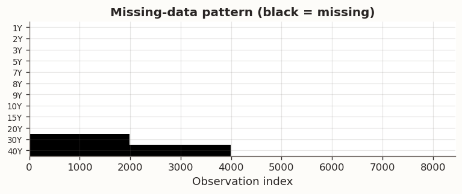
Figure 16: Missing-data pattern in the full 12-tenor JGB panel
(a) Full-sample fit on the 12-tenor panel with structural missingness in 30Y and 40Y
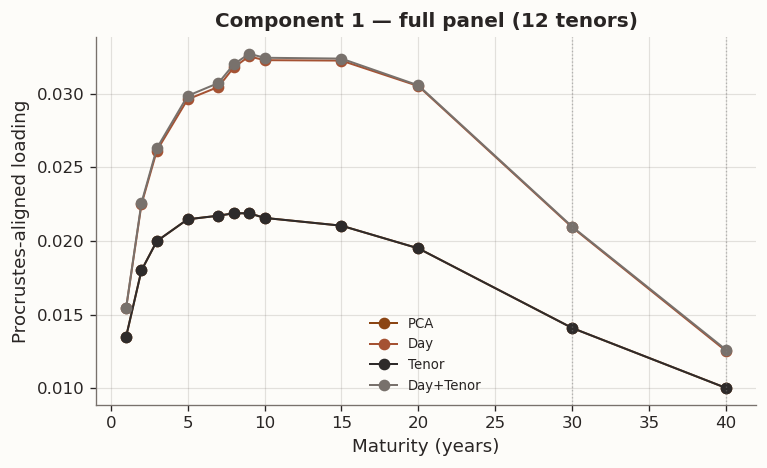
(b)
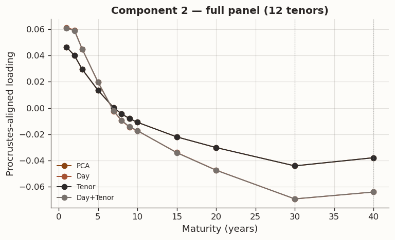
(c)
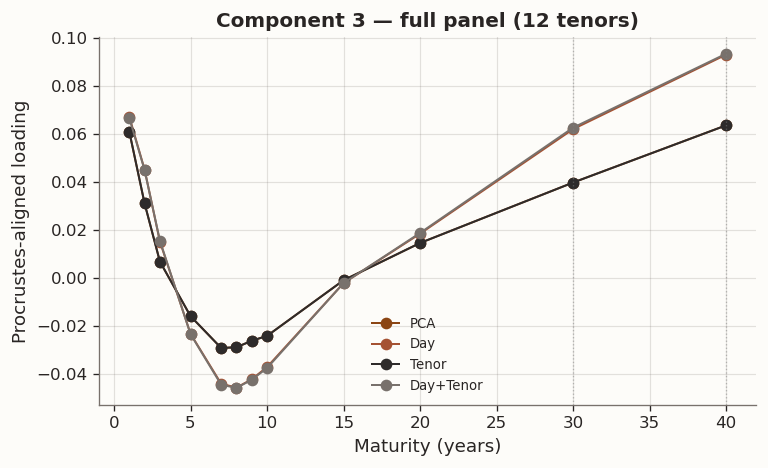
(d)
Figure 17
Reconstruction RMSE on observed entries (standardised scale):
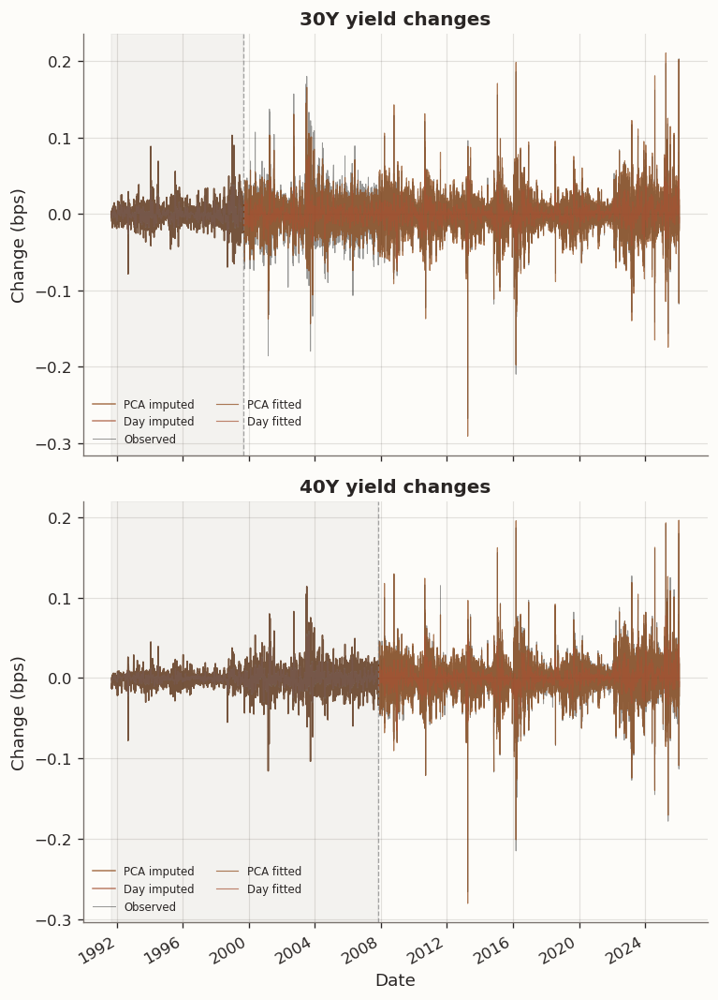
(a) Imputed yield changes and reconstructed yield levels for structurally missing tenors
tenor
30Y
40Y
model
Day
0.8801
0.8845
Day+Tenor
0.8655
0.8700
PCA
0.2026
0.1661
Tenor
0.2026
0.1661
(b)
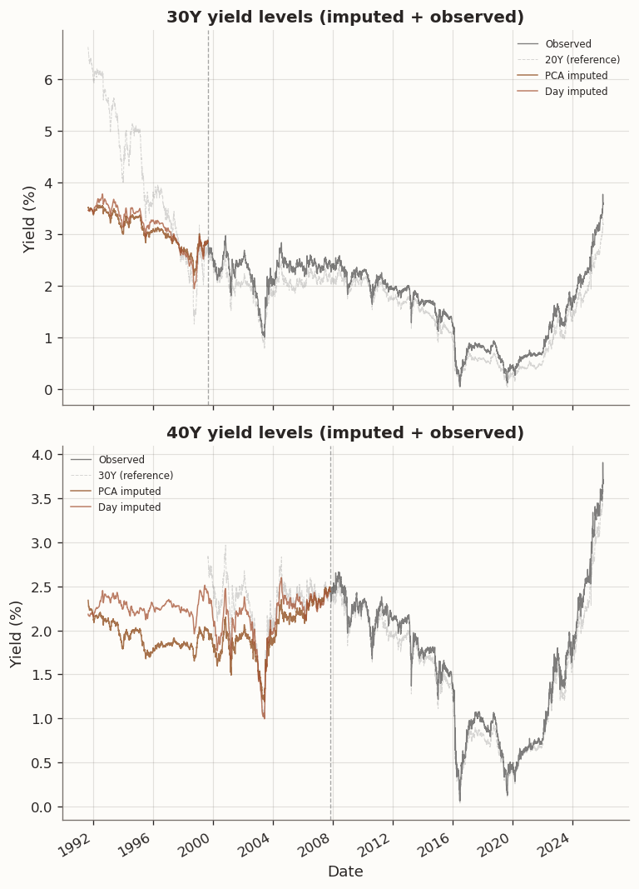
(c)
Figure 18
The full panel starts from the earliest date where all 10 core tenors (1Y–20Y) are available, extending the sample backward by several years relative to the main analysis. The 30Y and 40Y columns introduce two contiguous missing-data blocks: 30Y is structurally absent before ~1999, and 40Y before ~2007. Together these produce a substantially higher missing-data fraction than the 40Y-only setup in the earlier version of this appendix.
The results table and loading plots above show the same qualitative pattern as the main-body full-sample study: cross-validation selects \tau = 0 for the Tenor model (no maturity-axis benefit), while the Day and Day+Tenor models accept a modest reconstruction penalty in exchange for sharply reduced score roughness.
The imputed yield changes for both 30Y and 40Y display plausible time-varying volatility through the missing period. The 30Y imputation is notably cleaner than the 40Y: the 30Y’s nearest observed neighbor is the 20Y at a 10-year gap, while the 40Y must extrapolate from 30Y loadings that are themselves estimated from a partially observed column during the early period. The RMSE table on the observed overlap period confirms the expected pattern: PCA and Tenor achieve the lowest per-tenor RMSE, while Day and Day+Tenor trade reconstruction fidelity for temporal smoothness.
The yield-level reconstruction cumulates imputed daily changes backward from the first observed yield level. For 30Y, the imputed levels track the 20Y reference curve during the pre-1999 period with a plausible spread. For 40Y, the imputed levels sit below the 30Y throughout the pre-2007 period—a pattern that warrants discussion. In principle an inverted 30Y–40Y spread is not impossible: convexity return at the ultra-long end introduces a negative yield adjustment -\tfrac{1}{2}\,\text{duration}^2\,\sigma^2 that grows with maturity, and in the post-2007 JGB market the 30Y–40Y spread has indeed been negative at times, driven by Japanese life insurers and pension funds bidding aggressively for 40Y duration to hedge ultra-long liabilities. However, this inversion is predominantly a post-2007 phenomenon reflecting specific supply-demand dynamics that may not have existed in the 1990s high-rate environment. The model produces the inversion because the 40Y loading vector v_{40\text{Y}} is estimated entirely from the post-2007 observed window, where those dynamics are present, and the rank-3 linear structure \hat{x}_{t,j} = u_t^\top v_j applies the same loading to pre-2007 score trajectories without any mechanism to enforce monotonicity across maturities or to accommodate regime-dependent loading relationships. This is a limitation of linear factor imputation: the model extrapolates a single set of loadings across the entire sample, which can produce implausible cross-sectional orderings when the loading structure is regime-dependent. The tenor-chain penalty could in principle mitigate this by shrinking the 40Y loading toward the 30Y loading, but cross-validation selects \tau = 0, leaving this channel inactive.
The reconstructed levels are most useful as inputs for downstream applications that require a complete panel (e.g., covariance estimation across the full yield curve history), but we should be aware that the imputed 40Y levels in the pre-2007 period reflect post-2007 loading geometry and may understate the true 30Y–40Y spread in the earlier regime.